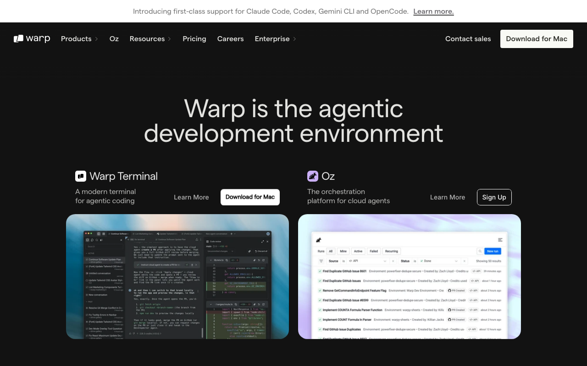

AI terminal · warm cream canvas
Warp · https://www.warp.dev · Fetched 2026-04-20

Warp는 AI-powered terminal이라는 포지셔닝을 Warm Brutalist Terminal 비주얼로 풀어냈다. 가장 특이한 점은 대부분의 dev-tool이 쓰는 검정이 아닌 #FAF9F6 cream/warm-white를 주 bg로 선택했다는 것 — Kraft paper/Bauhaus 계열의 따뜻한 off-white로, "터미널은 검정이어야 한다"는 클리셰를 깨는 전략적 선택이다. 제품 자체(Warp terminal)는 다크지만, 마케팅 사이트는 cream-first.
컬러 시스템은 의도적으로 빈약하다 — frequency candidates를 봐도 검정(#000 74회), cream(#FAF9F6 33회), 흰색(#FFFFFF 10회)이 압도적이고, 나머지는 거의 alpha-overlay. 중간 gray 계단이 7-8단(#232224, #2B2B2B, #353534, #454545, #666469, #868584, #AFAEAC, #E3E2E0)으로 촘촘. 컬러로 말하지 않고 warm neutrals + typography로 말한다.
타이포는 Warp의 진짜 시그니처. Inter(57회)를 body로 쓰면서, display에 Matter Regular/Medium(sans serif 브랜드 커스텀), Aguzzo-TRIAL Medium(experimental display), Abel까지 동시에 로드한다. mono는 Geist Mono + Fragment Mono + DM Mono — 3종의 monospace를 맥락별로 swap. weight는 400/500/600/700/900, 300 없음.
레이아웃은 Framer 기반(--framer-* custom properties). Framer의 rich text node 시스템이 그대로 드러나 [data-framer-component-type=DeprecatedRichText] selector가 대량 등장. Framer native scroll-driven animations 풍부.
01. 한눈에 보기
:root {
--cream: #FAF9F6;
--fg: #000000;
--fg-muted: #666469;
--border: #E3E2E0;
--dark-bg: #1A1A1A;
}
body {
background: var(--cream);
color: var(--fg);
}body {
font-family: "Inter","Inter Placeholder",
sans-serif;
font-weight: 400;
font-size: 16px;
}
h1, h2, .display {
font-family: "Matter Regular",
"Matter Regular Placeholder",
sans-serif;
font-weight: 500;
}
code { font-family: "Geist Mono",monospace; }.btn-warp {
background: #000000;
color: #FAF9F6;
padding: 12px 24px;
border-radius: 8px;
font-weight: 500;
transition: all .2s ease;
}
.btn-warp:hover {
background: #1A1A1A;
transform: translateY(-1px);
}#FFFFFF pure white로 두지 마라 — Warp의 정체성은 #FAF9F6 warm cream이다. pure white로 바꾸면 Stripe/Apple 느낌이 되고 Warp 브랜드가 증발한다.02. 출처
| Source URL | https://www.warp.dev |
|---|---|
| Fetched | 2026-04-20 |
| Framework | Framer (native site builder) |
| Font vars | --framer-font-family, --framer-link-*-font-family |
| Theme | light default (product은 dark) |
03. 테크 스택
- Framework: Framer (native)
- CSS: Framer custom properties (
--framer-*) + custom fonts - Typography: Inter + Matter (brand sans) + Geist/Fragment/DM Mono + Aguzzo + Abel
- Theme: light marketing / dark product
- Interaction: Framer scroll-driven animations
- Rich text:
[data-framer-component-type=DeprecatedRichText]
04. 타이포그래피
Inter(57회) body + Matter brand display + 3종 mono. weight 400/500/600/700/900 (300 없음).
- Primary body:
Inter(57회) - Display sans:
Matter Regular/Medium/SQ(brand custom) - Experimental:
Aguzzo-TRIAL Medium - Condensed:
Abel - Mono:
Geist Mono(6회) /Fragment Mono(3회) /DM Mono(2회) /Matter Mono Regular - Framer Placeholder: 모든 브랜드 폰트에 Placeholder 변형 (FOIT 방지)
- Weights: 400 · 500 · 600 · 700 · 900
Type Scale
05. 컬러
Warm neutrals 지배 — cream + black + warm gray 8단. 컬러 팔레트 의도적으로 빈약.
Dominant Usage
06. 스페이싱
Framer spacing, 4px base.
07. 라디우스
07S. 섀도우 — Border-first
Warp는 shadow를 거의 쓰지 않는다 — cream bg 위에서 border가 primary elevation.
08. 모션
Framer native scroll-driven + hover transform.
| Pattern | Value | Use |
|---|---|---|
| hover transition | .2s ease | color + transform |
| scroll reveal | parallax / fade-in | Framer default |
| button press | translateY(-1px) | interactive feedback |
09. 레이아웃
Hero
- bg #FAF9F6 cream
- Matter 72-96px 500
- Inter subcopy #666469
- Single dark CTA
Section Rhythm
- padding 96-128px
- max-width 1200-1440px
- cream / white alternation
Warm Card
- bg #FAF9F6 / #FFFFFF
- border 1px #E3E2E0
- radius 12
- hover: translateY(-2) + soft shadow
Terminal Frame
- bg #1A1A1A / #000
- radius 16
- subtle border
- Geist Mono 내부
Navigation
- height 72px
- bg cream / transparent
- Inter 500
- Dark Download CTA
10. 컴포넌트
Dark CTA on Cream (Primary)
.btn-warp {
background: #000000;
color: #FAF9F6;
padding: 12px 24px;
border-radius: 8px;
font-family: "Inter", sans-serif;
font-weight: 500;
transition: background .2s ease, transform .2s ease;
}
.btn-warp:hover {
background: #1A1A1A;
transform: translateY(-1px);
}Ghost CTA
.btn-warp-ghost {
background: transparent;
color: #000000;
padding: 12px 24px;
border-radius: 8px;
border: 1px solid #E3E2E0;
font-weight: 500;
}
.btn-warp-ghost:hover { background: #F2F1EE; }Warm Card
.warp-card {
background: #FAF9F6;
border: 1px solid #E3E2E0;
border-radius: 12px;
padding: 24px;
transition: transform .2s, box-shadow .2s;
}
.warp-card:hover {
transform: translateY(-2px);
box-shadow: 0 8px 24px rgba(0,0,0,.08);
}Terminal Screenshot Frame
.terminal-frame {
background: #1A1A1A;
border-radius: 16px;
padding: 8px;
border: 1px solid #2B2B2B;
overflow: hidden;
}
.terminal-frame pre {
font-family: "Geist Mono", monospace;
color: #FAF9F6;
padding: 24px;
}Oversized Display Headline
.display-xl {
font-family: "Matter Regular", sans-serif;
font-size: clamp(48px, 8vw, 120px);
font-weight: 500;
line-height: 1.0;
letter-spacing: -0.03em;
color: #000000;
}11. Agent Prompt Guide
| Role | Token | Hex |
|---|---|---|
| Bg (cream) | --cream | #FAF9F6 |
| Text | --fg | #000000 |
| Text muted | --fg-muted | #666469 |
| Border | --border | #E3E2E0 |
| Dark bg (product) | --dark-bg | #1A1A1A |
Example Prompts
🎯 Hero
Warp hero: bg #FAF9F6 warm cream, oversized headline Matter Regular 96px weight 500 color #000. Inter subcopy 18px #666469. Dark CTA bg #000 color #FAF9F6 padding 12px 24px radius 8. Optional terminal screenshot card dark bg #1A1A1A below.
🔘 Dark CTA
Warp dark CTA: bg #000 color #FAF9F6 (cream text!), padding 12px 24px, radius 8, Inter 500. Hover bg #1A1A1A + translateY(-1px).
🎴 Warm Card
Warp card: bg #FAF9F6, border 1px solid #E3E2E0, radius 12, padding 24. Hover translateY(-2px) + subtle shadow 0 8px 24px rgba(0,0,0,.08).
🖥️ Terminal Frame
Product terminal frame: bg #1A1A1A, radius 16, padding 8, border 1px #2B2B2B. Inside Geist Mono text color #FAF9F6.
12. DO / DON'T
✓ DO
- ✅ bg는
#FAF9F6cream (pure white 아님) - ✅ 텍스트는
#000000true black - ✅ display에 Matter Regular weight 500 · 72-120px
- ✅ 3종 mono (Geist/Fragment/DM) 맥락별 사용
- ✅ border-first elevation (shadow 최소)
- ✅ cream+black 2-tone으로 충분
✗ DON'T
- bg를
#FFFFFF/#F5F5F5로 두지 말 것 — cream#FAF9F6 - body weight 300 light 쓰지 말 것 — 400부터
- mono 한 종류만 쓰지 말 것 — 3종 병행
- shadow로 elevation 표현하지 말 것 — border
- Supabase green 같은 accent 추가하지 말 것 — warm neutrals only
- hero headline에 serif 쓰지 말 것 — Matter/Inter sans